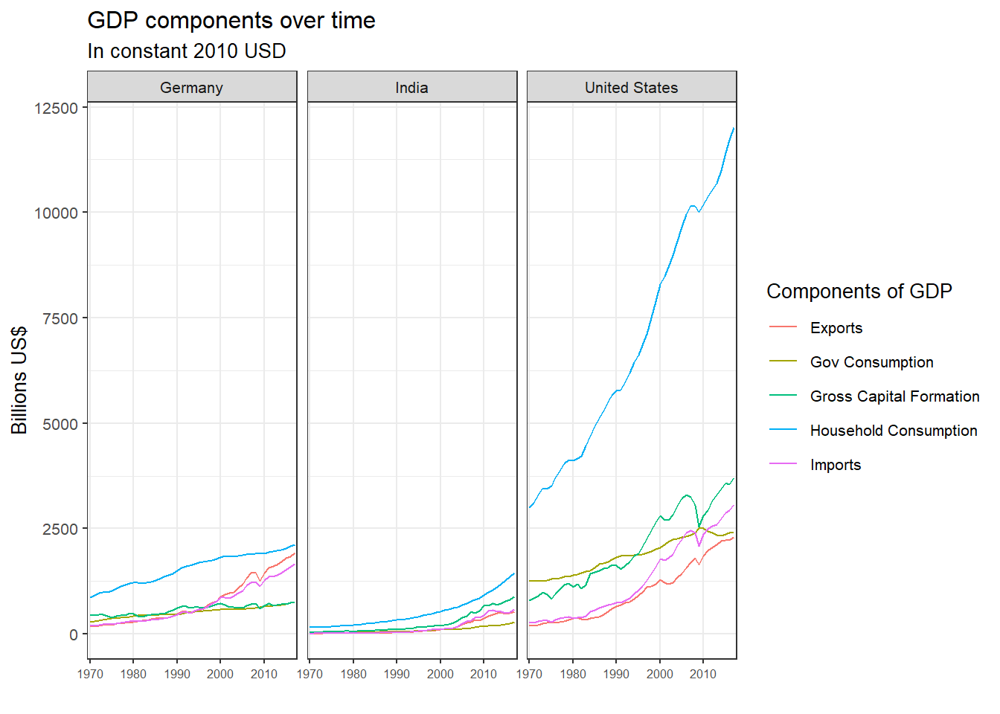

library(tidyverse) # Load ggplot2, dplyr, and all the other tidyverse packages## -- Attaching packages -------------------------------- tidyverse 1.3.0 --## v ggplot2 3.3.2 v purrr 0.3.4
## v tibble 3.0.3 v dplyr 1.0.2
## v tidyr 1.1.2 v stringr 1.4.0
## v readr 1.3.1 v forcats 0.5.0## -- Conflicts ----------------------------------- tidyverse_conflicts() --
## x dplyr::filter() masks stats::filter()
## x dplyr::lag() masks stats::lag()library(mosaic)## Loading required package: lattice## Loading required package: ggformula## Loading required package: ggstance##
## Attaching package: 'ggstance'## The following objects are masked from 'package:ggplot2':
##
## geom_errorbarh, GeomErrorbarh##
## New to ggformula? Try the tutorials:
## learnr::run_tutorial("introduction", package = "ggformula")
## learnr::run_tutorial("refining", package = "ggformula")## Loading required package: mosaicData## Loading required package: Matrix##
## Attaching package: 'Matrix'## The following objects are masked from 'package:tidyr':
##
## expand, pack, unpack## Registered S3 method overwritten by 'mosaic':
## method from
## fortify.SpatialPolygonsDataFrame ggplot2##
## The 'mosaic' package masks several functions from core packages in order to add
## additional features. The original behavior of these functions should not be affected by this.
##
## Note: If you use the Matrix package, be sure to load it BEFORE loading mosaic.
##
## Have you tried the ggformula package for your plots?##
## Attaching package: 'mosaic'## The following object is masked from 'package:Matrix':
##
## mean## The following objects are masked from 'package:dplyr':
##
## count, do, tally## The following object is masked from 'package:purrr':
##
## cross## The following object is masked from 'package:ggplot2':
##
## stat## The following objects are masked from 'package:stats':
##
## binom.test, cor, cor.test, cov, fivenum, IQR, median, prop.test,
## quantile, sd, t.test, var## The following objects are masked from 'package:base':
##
## max, mean, min, prod, range, sample, sumlibrary(ggthemes)##
## Attaching package: 'ggthemes'## The following object is masked from 'package:mosaic':
##
## theme_maplibrary(GGally)## Registered S3 method overwritten by 'GGally':
## method from
## +.gg ggplot2library(readxl)
library(here)## here() starts at C:/Users/CPizzuti/Desktop/my_websitelibrary(skimr)##
## Attaching package: 'skimr'## The following object is masked from 'package:mosaic':
##
## n_missinglibrary(janitor)##
## Attaching package: 'janitor'## The following objects are masked from 'package:stats':
##
## chisq.test, fisher.testlibrary(broom)
library(tidyquant)## Loading required package: lubridate##
## Attaching package: 'lubridate'## The following objects are masked from 'package:base':
##
## date, intersect, setdiff, union## Loading required package: PerformanceAnalytics## Loading required package: xts## Loading required package: zoo##
## Attaching package: 'zoo'## The following objects are masked from 'package:base':
##
## as.Date, as.Date.numeric##
## Attaching package: 'xts'## The following objects are masked from 'package:dplyr':
##
## first, last##
## Attaching package: 'PerformanceAnalytics'## The following object is masked from 'package:graphics':
##
## legend## Loading required package: quantmod## Loading required package: TTR## Registered S3 method overwritten by 'quantmod':
## method from
## as.zoo.data.frame zoo## Version 0.4-0 included new data defaults. See ?getSymbols.## == Need to Learn tidyquant? =============================================
## Business Science offers a 1-hour course - Learning Lab #9: Performance Analysis & Portfolio Optimization with tidyquant!
## </> Learn more at: https://university.business-science.io/p/learning-labs-pro </>library(infer)##
## Attaching package: 'infer'## The following objects are masked from 'package:mosaic':
##
## prop_test, t_testlibrary(openintro)## Loading required package: airports## Loading required package: cherryblossom## Loading required package: usdata##
## Attaching package: 'openintro'## The following object is masked from 'package:mosaic':
##
## dotPlot## The following objects are masked from 'package:lattice':
##
## ethanol, lsegmentslibrary(tidyquant)
UN_GDP_data <- read_excel(here::here("data", "Download-GDPconstant-USD-countries.xls"), # Excel filename
sheet="Download-GDPconstant-USD-countr", # Sheet name
skip=2) # Number of rows to skip
tidy_GDP_data <- UN_GDP_data %>%
pivot_longer(cols = 4:51, names_to = "year", values_to = "Expenditure") %>%mutate(Expenditure = Expenditure/(10^9))
clean_GDP_Data <- tidy_GDP_data%>%
mutate(IndicatorName = case_when(
IndicatorName == "Final consumption expenditure" ~ "Total Consumption",
IndicatorName == "Household consumption expenditure (including Non-profit institutions serving households)" ~ "Household Consumption",
IndicatorName == "General government final consumption expenditure" ~ "Gov Consumption",
IndicatorName == "Gross capital formation" ~ "Gross Capital Formation",
IndicatorName == "Gross fixed capital formation (including Acquisitions less disposals of valuables)" ~ "Gross Capital",
IndicatorName == "Exports of goods and services" ~ "Exports",
IndicatorName == "Imports of goods and services" ~ "Imports",
IndicatorName == "Gross Domestic Product (GDP)" ~ "GDP",
IndicatorName == "Agriculture, hunting, forestry, fishing (ISIC A-B)" ~ "Ag/Hunt/Forest/Fish",
IndicatorName == "Mining, Manufacturing, Utilities (ISIC C-E)" ~ "Min/Manu/Utility",
IndicatorName == "Manufacturing (ISIC D)" ~ "Manufacturing",
IndicatorName == "Construction (ISIC F)" ~ "Construction",
IndicatorName == "Wholesale, retail trade, restaurants and hotels (ISIC G-H)" ~ "Wholesale/Retail/Hospitality",
IndicatorName == "Transport, storage and communication (ISIC I)" ~ "Transport/Comm/Storage",
IndicatorName == "Other Activities (ISIC J-P)" ~ "Other",
IndicatorName == "Total Value Added" ~ "Total Value Added",
IndicatorName == "Changes in inventories" ~ "Changes in inventories"))
clean_GDP_Data## # A tibble: 176,880 x 5
## CountryID Country IndicatorName year Expenditure
## <dbl> <chr> <chr> <chr> <dbl>
## 1 4 Afghanistan Total Consumption 1970 5.56
## 2 4 Afghanistan Total Consumption 1971 5.33
## 3 4 Afghanistan Total Consumption 1972 5.20
## 4 4 Afghanistan Total Consumption 1973 5.75
## 5 4 Afghanistan Total Consumption 1974 6.15
## 6 4 Afghanistan Total Consumption 1975 6.32
## 7 4 Afghanistan Total Consumption 1976 6.37
## 8 4 Afghanistan Total Consumption 1977 6.90
## 9 4 Afghanistan Total Consumption 1978 7.09
## 10 4 Afghanistan Total Consumption 1979 6.92
## # ... with 176,870 more rows# Let us compare GDP components for these 3 countries
country_list <- c("United States","India", "Germany")
US_India_Germany_GDP <- clean_GDP_Data%>%
group_by(year)%>%
select(Country, IndicatorName, year, Expenditure)%>%
filter(Country %in% c("United States","India","Germany"))%>%
filter(IndicatorName %in% c("Gross Capital Formation", "Exports","Gov Consumption", "Household Consumption", "Imports" ))
ggplot(US_India_Germany_GDP, aes(year, Expenditure, colour = IndicatorName, group = IndicatorName)) + geom_line() + labs (title = "GDP components over time", subtitle = "In constant 2010 USD", y = "Billions US$", x = "") + theme_bw(base_size = 10) + scale_x_discrete(breaks = c(1970, 1980, 1990, 2000, 2010)) + facet_wrap(~Country) + guides(color=guide_legend("Components of GDP")) + theme(axis.text.x = element_text(size = 6))